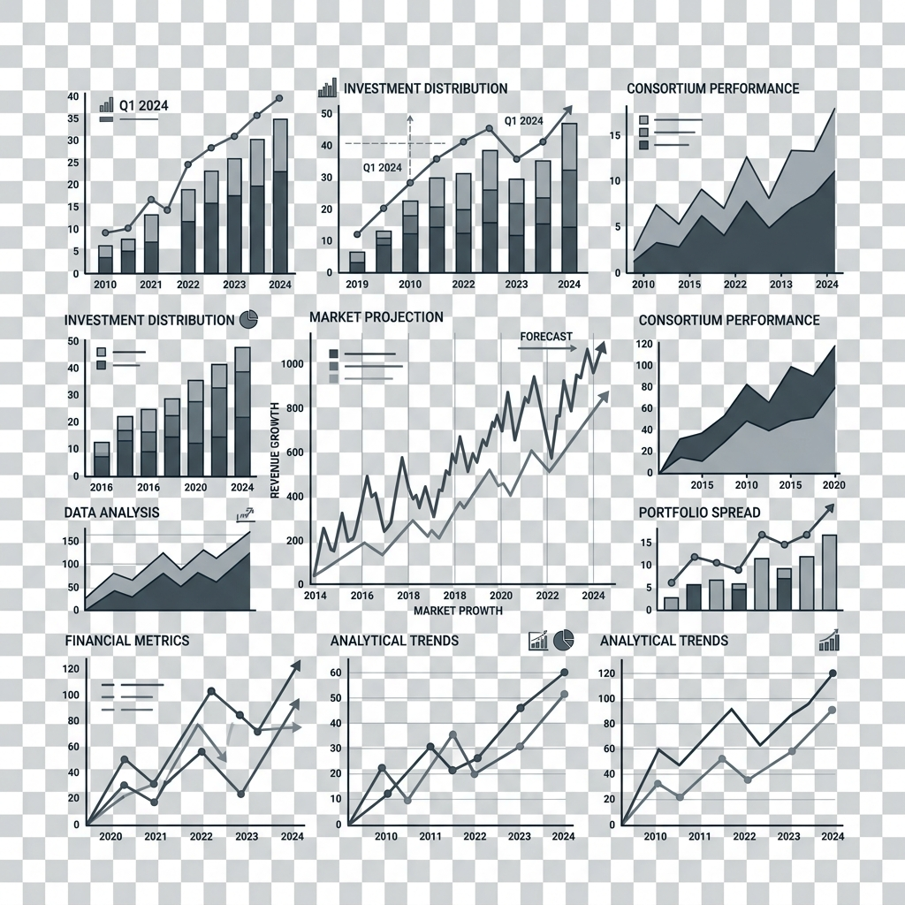
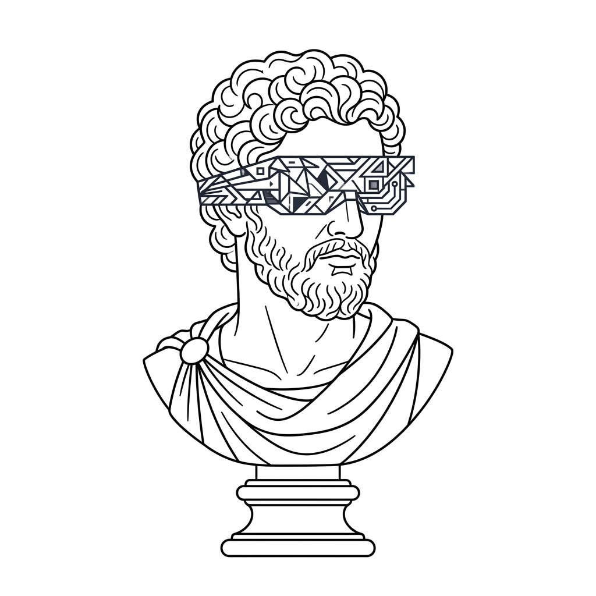
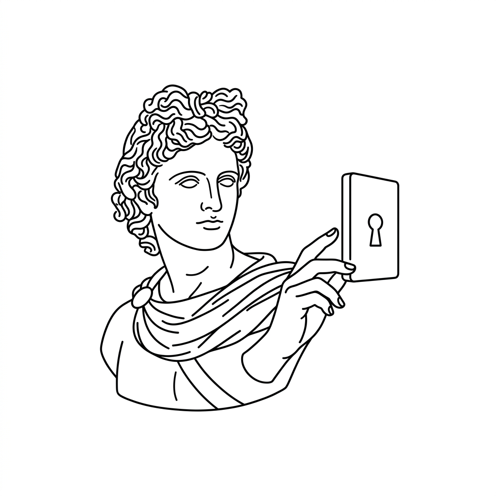
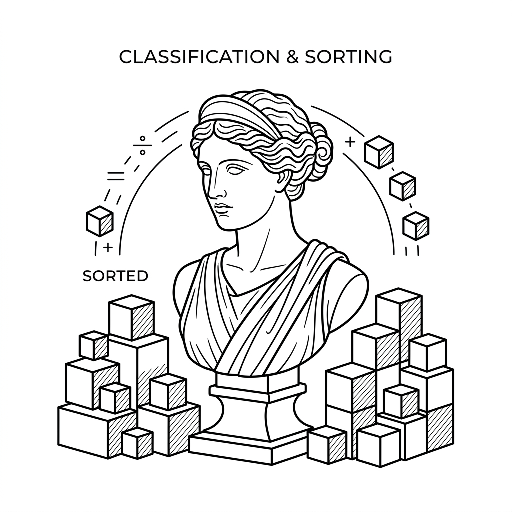
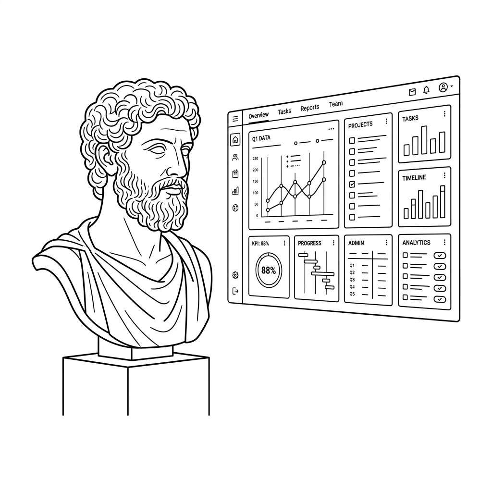

OS CLIENTES CERTOS
PRECISAM CHEGAR
ATÉ VOCÊ
Sua carteira depende de indicação, panfletagem e lista fria de telefone. Você não tem controle sobre quantos interessados em consórcio entram, nem quando. Sem previsibilidade, não tem como bater meta. Nem escalar a operação.
A Mancekt constrói o sistema que muda isso.

da sua operação
e ajustes contínuos
de cada interessado
para a sua carteira
Sem um sistema estruturado, você está sempre começando o mês do zero.
Cada mês é uma corrida para bater metas de fechamento de cotas:
- Incerteza comercial: Você prospecta quando a agenda está vazia e para quando ela enche.
- Dependência: Depender de indicação e de lista fria é aceitar que seu crescimento está nas mãos dos outros.
Montanha-russa de fechamento de cotas
Investimento e comissões desperdiçadas

A ilusão dos métodos tradicionais
Indicação não tem escala. Panfletagem não traz previsibilidade. E depender de lista fria deixa o futuro da sua operação de consórcio vulnerável e imprevisível.
O custo real de não ter controle
Quanto custou o último mês sem interessados qualificados entrando todos os dias? Clientes que sumiram na simulação e cotas perdidas são prejuízos reais mensais.
O que separa quem bate meta todo mês de quem vive de sorte é ter controle.
Não adianta gerar volume de contato qualquer. Lead sem qualificação vira ligação que não atende, simulação que ninguém fecha e tempo do seu time comercial desperdiçado.
Imagina abrir o painel numa segunda de manhã e ver exatamente quantos interessados em consórcio entraram no fim de semana, qual o perfil de crédito de cada um e quem está pronto pra fechar a cota ainda hoje. Sem pergunta, sem achismo, sem depender de ninguém te indicar. Só você, os dados e a próxima venda.
Na Mancekt, a gente entrega um sistema de marketing inteligente: atração, qualificação e leads prontos pra conversa comercial, com dados e inteligência artificial trabalhando juntos todos os dias.
O que acontece depois do clique.
A maioria das soluções de marketing entrega tráfego e para por aí. O que diferencia o sistema da Mancekt é o processo inteligente que transforma cada visitante em informação acionável pra sua operação de vendas.

Lead Entra
Visitante acessa a campanha e preenche o formulário de qualificação.
IA Analisa
Inteligência artificial lê o perfil, comportamento e sinais de intenção de compra (carro, imóvel, capital de giro) em tempo real.

Sistema Classifica
Pronto pra fechar cota, precisa de nutrição ou fora do perfil de crédito. Automático.

Chega Organizado
Você recebe o lead no painel com perfil completo, objetivo da carta de crédito e próximo passo indicado.
O sistema aprende com o tempo
Cada lead que passa pelo sistema gera dados. Com o tempo, a inteligência artificial passa a reconhecer com precisão quem fecha cota com você, em que faixa de crédito e por qual motivo (carro, imóvel, reforma, capital de giro). Isso não pertence a nenhuma plataforma. Pertence à sua operação.
Um ativo único da sua operação
O sistema é construído em cima do comportamento de compra do seu cliente específico. Não é um modelo pronto tirado de uma prateleira. Não dá pra copiar. E vai valendo mais a cada dia que opera.
Como construímos e evoluímos sua máquina de vendas.
1. Construção
Levantamos o seu perfil de cliente ideal, definimos quais sinais mostram que alguém está pronto pra fechar uma cota, mapeamos a jornada do primeiro contato até a venda e configuramos o sistema que filtra, classifica e entrega cada lead no momento certo. Tudo baseado em dados. Investimento único nesta etapa.
2. Evolução contínua
Com o sistema no ar, a gente acompanha, ajusta e melhora diariamente. A inteligência artificial analisa o comportamento dos seus leads em tempo real, a gente interpreta os dados e calibra a estratégia. Quanto mais o sistema opera, mais preciso ele fica. Valor fixo mensal.
Não é promessa. É o que já aconteceu.
Um empresário do setor de consórcio chegou até a Mancekt da mesma forma que você chegou aqui: dependendo de indicação, sem controle sobre os leads, sem saber quais valiam o tempo do time comercial. Todo mês começava do zero.
de crescimento no faturamento após o sistema entrar em operação
de redução no custo por lead qualificado
Antes de falar em investimento, faz uma conta rápida.
Quantas cotas você deixou de fechar esse mês por falta de leads qualificados? Multiplica isso pela sua comissão média por adesão. Esse número, que aparece todo mês e nunca entra na planilha, é o custo real de não ter um sistema. O investimento na Mancekt existe pra eliminar esse custo de vez.
- Mapeamento do seu cliente ideal e do comportamento de compra de cota
- Estratégia de atração baseada em dados do seu mercado
- Jornada do cliente do primeiro contato até a venda
- Inteligência artificial pra filtrar, classificar e qualificar cada lead
- Campanha de tráfego ativa e gerenciada
- Dashboards de controle em tempo real
- Acompanhamento diário com ajustes estratégicos contínuos
Construção única + acompanhamento mensal fixo.
Sem contrato de 12 meses. Sem taxa de cancelamento. Você fica porque funciona.
Quero ter controle sobre minhas vendasGarantia de 30 Dias
E se em 30 dias de sistema no ar você não enxergar clareza total sobre quem está entrando, em que etapa está e o que falta pra fechar, a gente devolve o valor do primeiro mês. Sem burocracia. Sem questionamento.
Você não está apostando no sistema. Está apostando no crescimento do seu negócio, e a gente assume o risco junto.
Antes de qualquer decisão, entenda onde está o gargalo da sua operação hoje.
Responda algumas perguntas rápidas sobre o seu processo atual de geração de clientes e a gente te mostra, sem custo e sem compromisso, onde estão as maiores oportunidades de melhoria.
Quero meu diagnóstico gratuitoPerguntas Frequentes
O que é o sistema da Mancekt?
+Um sistema completo de geração e qualificação de clientes, construído em cima da sua operação de consórcio. Isso inclui a estratégia, a automação, a campanha de tráfego, os dashboards de controle e o acompanhamento diário. Não é um serviço pontual. É uma estrutura que opera todos os dias.
O sistema serve para qualquer tipo de consórcio?
+Sim. O sistema é configurado em cima do seu perfil de cliente ideal e do tipo de carta que você mais vende. Ele filtra interessados por faixa de crédito, objetivo da compra e momento de decisão, então pode ser ajustado pra imóvel, veículo ou capital de giro.
Quanto tempo leva para o sistema entrar no ar?
+A fase de construção leva entre 2 e 3 semanas. Nesse período mapeamos o seu cliente ideal, configuramos toda a automação, criamos a jornada e subimos a campanha. Os primeiros leads já chegam na primeira semana de operação.
Preciso ter uma equipe de vendas grande?
+Não. O sistema entrega os leads qualificados e prontos pra conversa comercial. Você pode começar sozinho, atendendo cada lead com as informações certas na mão. Se tiver um time comercial, o resultado escala ainda mais rápido.
Como funciona o suporte e acompanhamento?
+Monitoramos os dados do sistema todos os dias: volume de leads, qualidade do perfil, taxa de conversão por etapa e desempenho da campanha. Quando algo precisa de ajuste, a gente ajusta. Você não precisa entender de tráfego nem de automação pra isso.
E se eu representar mais de uma administradora?
+Sim. O sistema não depende de qual administradora você representa. O que importa é que você tenha um produto claro (tipo de carta, prazo, condições) e um perfil de cliente definido.
Qual a diferença entre a Mancekt e um gestor de tráfego comum?
+Um gestor de tráfego cuida da campanha. A Mancekt cuida do processo inteiro. Além da campanha, você tem a qualificação dos leads, a automação que filtra quem vale o seu tempo, os dashboards de controle, a jornada do cliente estruturada e o acompanhamento diário. O gestor de tráfego entrega cliques. A gente entrega o sistema que transforma esses cliques em cotas fechadas.
Se você chegou até aqui, provavelmente já sabe que precisa disso.
A única pergunta é: quanto tempo a mais você vai deixar suas vendas dependendo de sorte e indicação?
Quero ter controle sobre minhas vendas